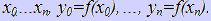
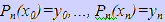
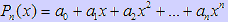
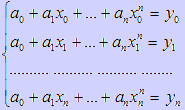
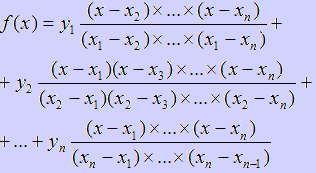
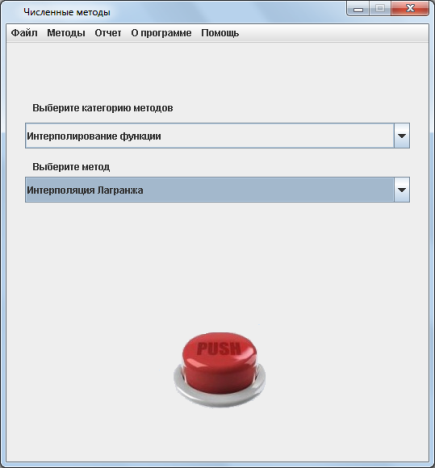
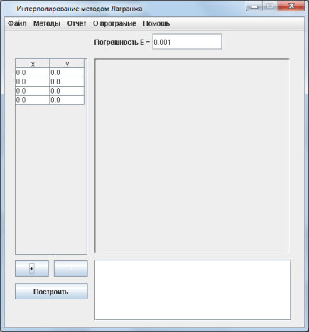
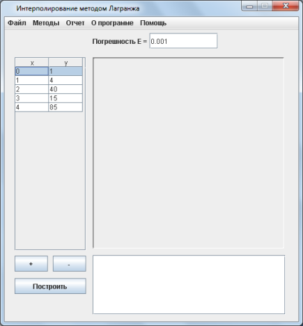
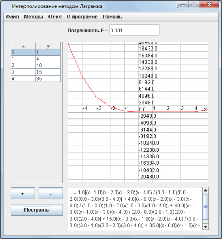

Интерполяция Лагранжа
Практическая часть
Теоретическая часть
Пусть дано (n+1)-оe значение функции действительного переменного f(x). Для (n+1)-й точки: . Выберем для приближённой функции полином P(x) степени не выше n,
значения которого совпадают со значениями функции в узлах интерполяции:
полином P(x) степени не выше n,
значения которого совпадают со значениями функции в узлах интерполяции:

Геометрически, это задача о построении параболы n-того порядка Pn(x), которая совпадает с функцией f(x) в наперёд заданных (n+1)-й точках.
Покажем, что задача имеет единственное решение:

ai-тое можно определить из системы уравнений:

Известно, по теореме Кронекера-Капелли, что, если ранг матрицы системы равен числу неизвестному, то система имеет единственное
решение. По предположению, все xi различны, а значит, определитель системы не равен 0. Следовательно задача имеет единственное решение.
Представим полином Лагранжа в общем виде:

Практическая часть
Пошаговые действия |
Пояснения к действиям |
|  | 1. Заходим в программу. Появляется окно, показанное слева, на котором выбираем категорию методов "Интерполирование функции" Выбираем метод "Интерполяция Лагранжа". Нажимаем кнопку "PUSH". |
|  | 2. Для того, чтобы задать узлы интерполяции нажимаем кнопку "+". Добавляем нужное количество узлов. С помощью кнопки "-" можно убрать лишние узлы. |
|  | 3. Вводим данные в таблицу, расположенную на форме слева, нажимаем кнопку "Построить" |
|  | 4. После того, как вы выполнили все действия, описанные выше, приложение выведет ответ и построит график полученного полинома. |
 |
5. После того, как вы получили ответ, можно просмотреть отчет, где предоставлено поэтапное решение. Для этого необходимо в главном меню программы, расположенном на верху экранной формы выбрать пункт "Отчет/Просмотр отчета". Вы увидите окно, расположенное слева. Также можно сохранить этот отчет нажав кнопку главного меню "Отчет/Сохранить отчет". |
 |
6. Если решение примера может пригодится вам в будущем, вы можете сохранить его с помощью конпки меню "Файл/Сохранить". В окне, которое появится(оно показано на рисунке слева) необходимо выбрать папку, в которую он сохранится и написать название. |